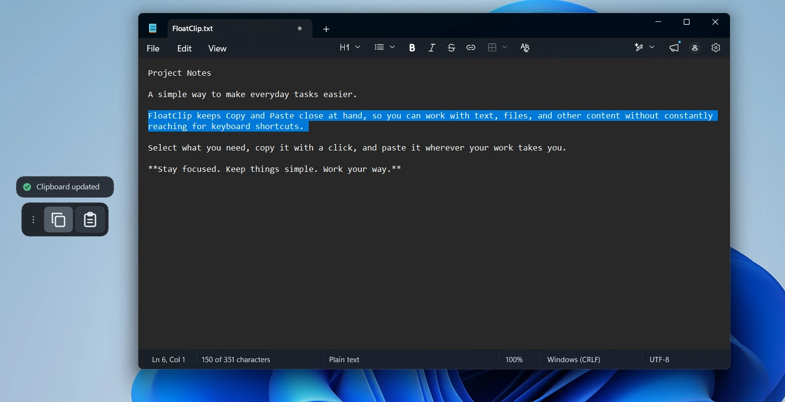
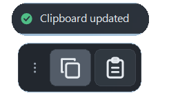
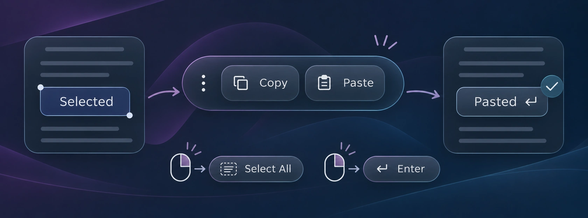
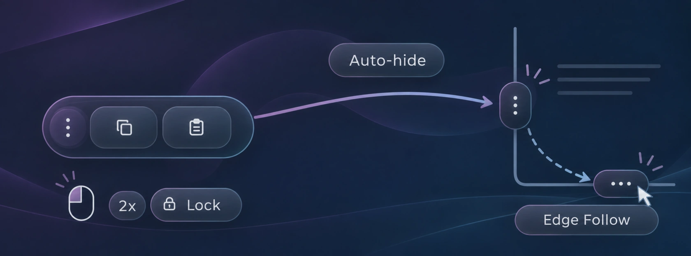
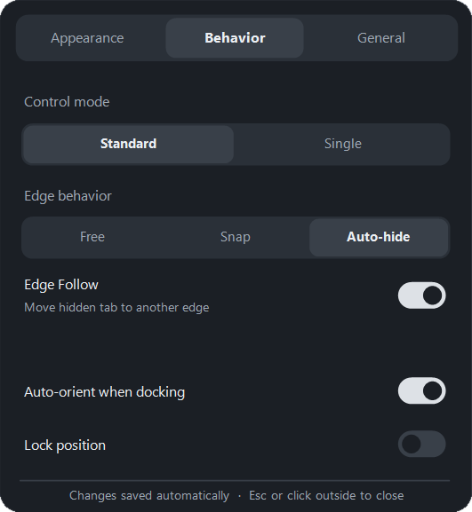
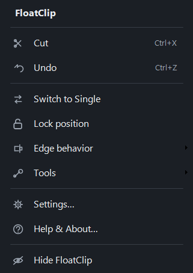

MAJHNO ORODJE. NARAVEN TOK.
Kopiraj. Prilepi.
Ostani v ritmu.
Imej kopiranje in lepljenje vedno pri roki. FloatClip je lahek, izvorni pripomoček za Windows, ki je na voljo, ko ga potrebuješ — in se umakne, ko ga ne.
Brezplačno · Windows 11 x64 · Brez namestitve


01 / VSAKDANJA OPRAVILA
Majhna bližnjica do bolj tekočega dela.
Klikni za kopiranje ali lepljenje. Z desnim klikom lahko označiš vse ali potrdiš z Enter. Dodatne geste so pri roki, brez nepotrebnih gumbov na zaslonu.


02 / PREMIKANJE
Premakni. Vrzi. Pripni.
FloatClip se prilagodi tvojemu načinu dela. Pusti ga prosto, pripni na rob ali ga tja vrzi z naravnim gibanjem Flick to Dock.
Auto-hide skrije kapsulo v majhen jeziček na robu. Edge Follow lahko skriti jeziček prestavi na drug rob, Lock pa ohrani izbrani položaj.
03 / PO TVOJEM
Ravno prav nastavitev.
Izberi velikost, videz in obnašanje, ki ti ustrezajo. Preklopi med načinoma Standard in Single, ostalo pa uredi v hitrem meniju, sistemskem pladnju ali izvornih nastavitvah.


USTVARJENO ZA WINDOWS
Lahko po zasnovi. Zasebno po načelu.
FloatClip uporablja bližnjice Windows, nastavitve shranjuje lokalno ter nima lastne zgodovine odložišča, računov ali telemetrije. Podpira deset jezikov aplikacije. Dodatne možnosti Windows ostajajo pod tvojim nadzorom.
PRENESI FLOATCLIP
Tvoj način dela, en klik stran.
Izberi izdajo Microsoft Store za namestitev in posodobitve prek trgovine ali prenesi samostojno različico Portable v1.0.0 z uradne GitHub izdaje.